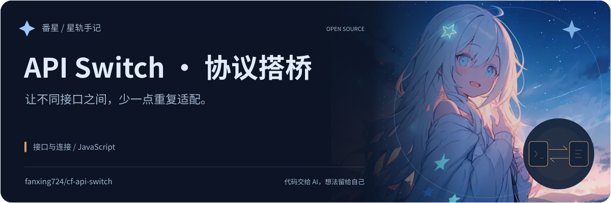
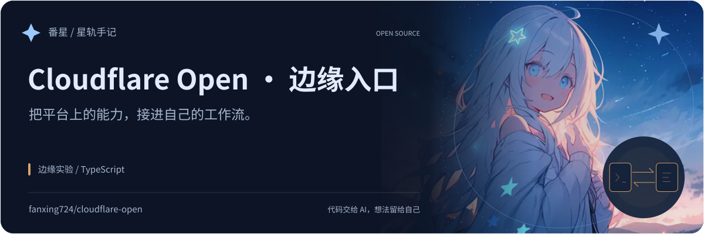
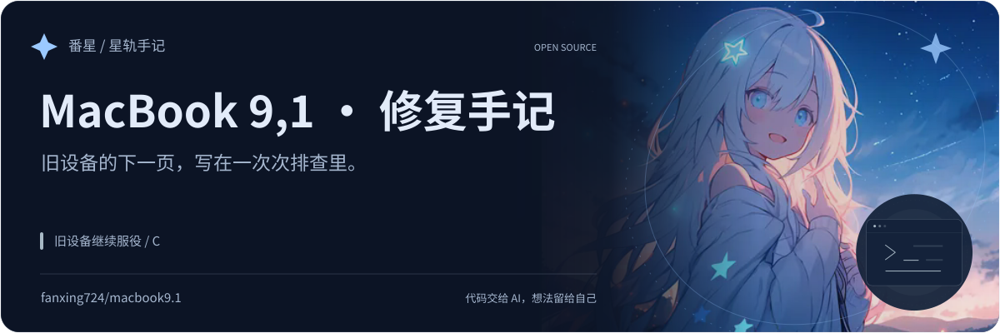
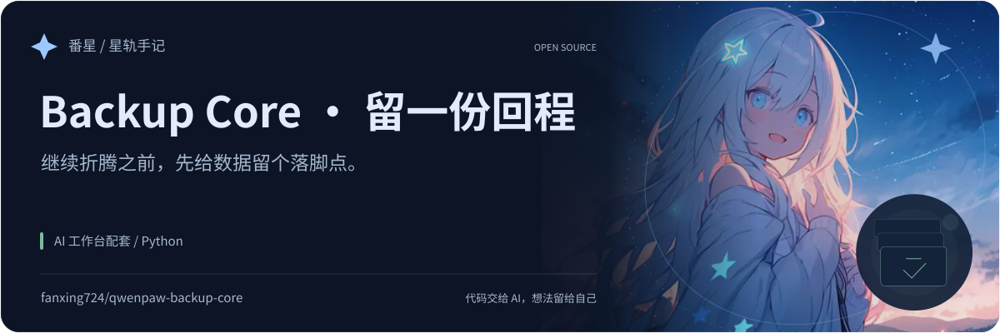
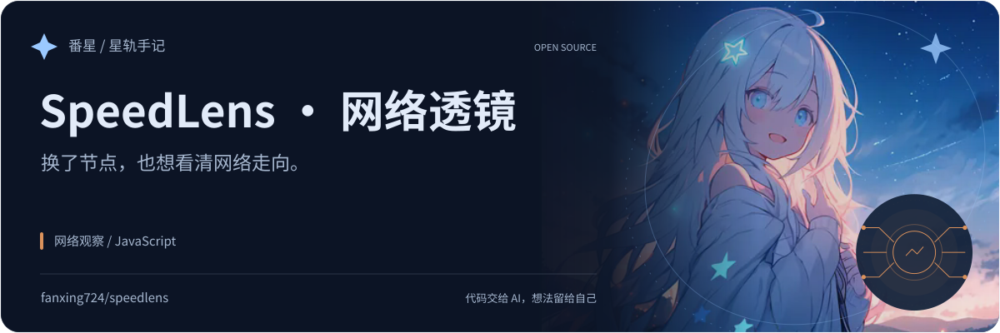

FANXING / PROJECT FIELD NOTES
每个想法，都有自己的出场方式。
同一份番星署名，各自的故事、配色与图形。选择喜欢的明暗效果，展开项目下方的引用代码，就能放进 README。

















没有找到这个项目。
同一份番星署名，各自的故事、配色与图形。选择喜欢的明暗效果，展开项目下方的引用代码，就能放进 README。





没有找到这个项目。